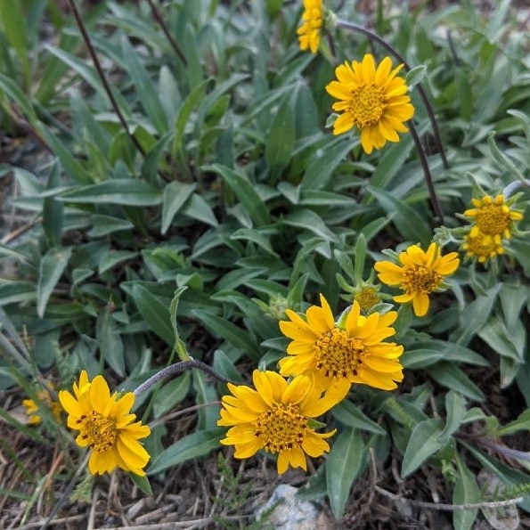

Helianthella californica
Common name
California Dwarf Sunflower
California helianthella
Family
Asteraceae
Family common name
Aster family
Blooms
April - September
Habitat and range
Open places in mountains, below 7000'.
Range Map